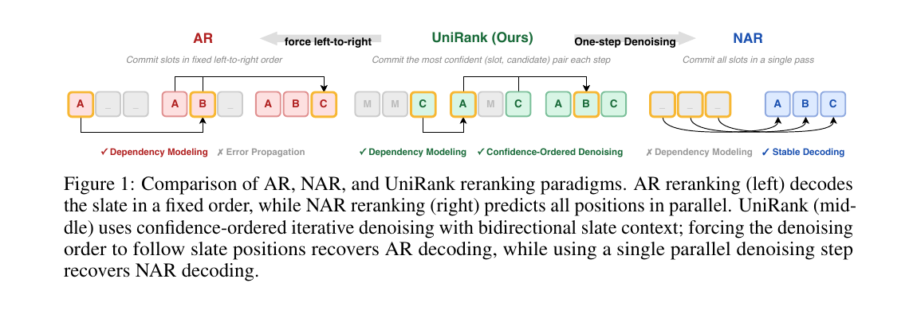
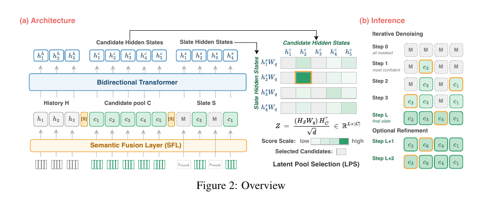
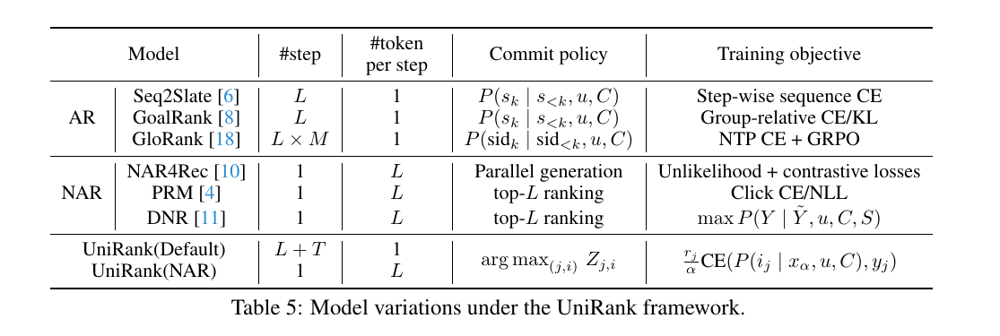
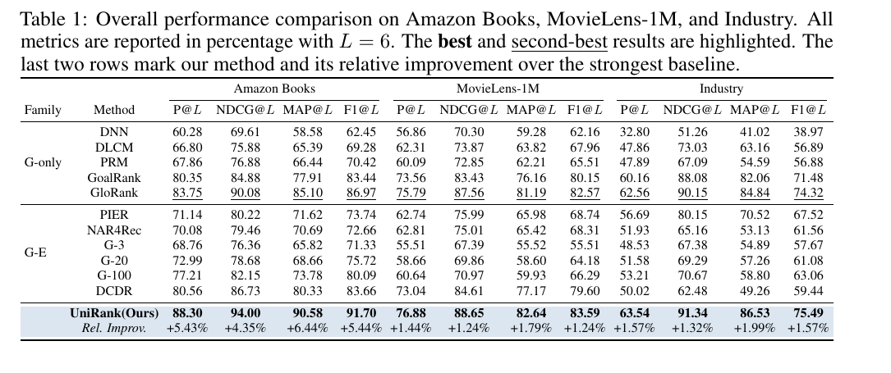
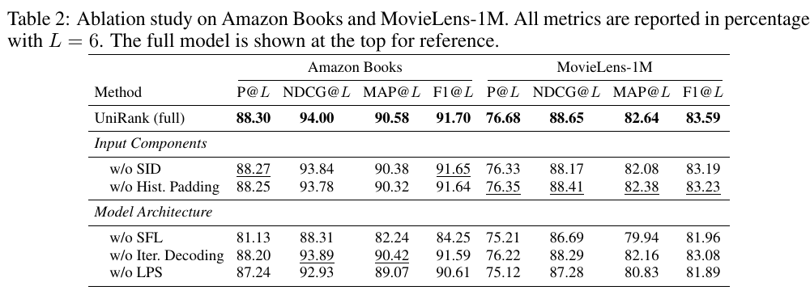
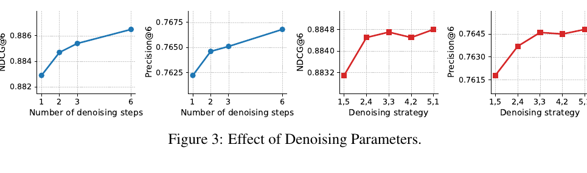
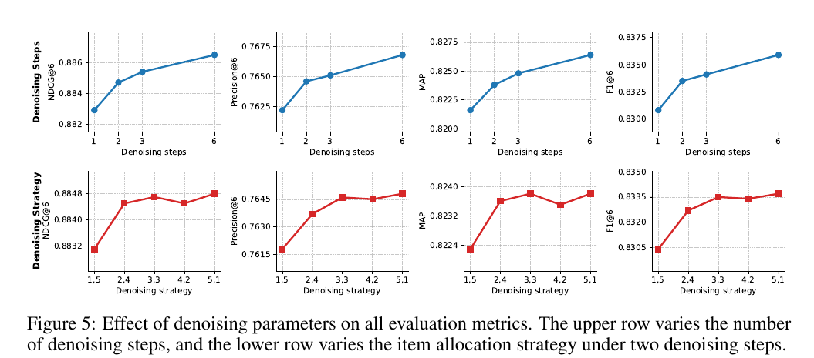
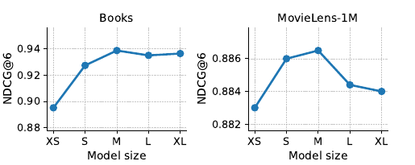
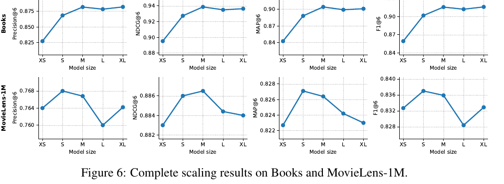
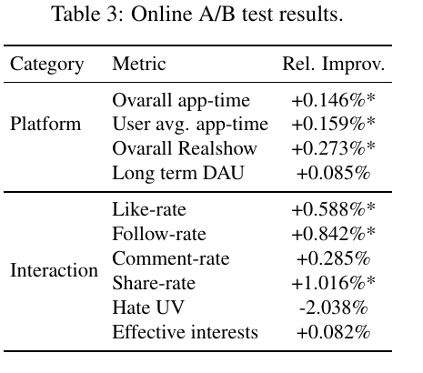

UniRank
1. 基本信息
- 标题：UniRank: Unified List-wise Reranking via Confidence-Ordered Denoising
- 作者：Pengyue Jia, Hailan Yang, Shuchang Liu, Xiaobei Wang, Wanyu Wang, Xiang Li, Yongqi Liu, Kaiqiao Zhan, Kun Gai, Xiangyu Zhao
- 机构：City University of Hong Kong；Kuaishou Technology
- 时间：arXiv v1，2026-05-11
- arXiv：https://arxiv.org/abs/2605.10527
- 本地 PDF：
C:\Users\chaol\Desktop\推荐论文阅读\re-ranking\UniRank-Unified-List-wise-Reranking-via-Denoising.pdf - 笔记位置：
论文笔记/重排/生成式重排/UniRank.md - 分类：重排 / 生成式重排 / 离散扩散 / confidence-ordered denoising
2. Vault 内相关论文 / 笔记关系检查
- 推荐系统重排最新进展：参考综述把 UniRank 放在 2026 生成式重排路线中，定位为“把 AR 和 NAR 统一成 confidence-ordered 填槽过程”的新近工作。
- NAR4Rec：直接对照基线和 NAR 特例代表。UniRank 的主结果表、附录统一框架表和基线描述都明确使用 NAR4Rec，论文批评其并行生成削弱 exposure dependency modeling，并用 confidence-ordered denoising 作为补足。
- 未给 NLGR 或 CMR 建立双向关系：UniRank 与它们同属重排主题，但本文没有把它们作为直接基线、前置工作、扩展对象或明确批评对象；因此不创建泛化链接，也不修改 CMR。
3. 一句话总结
UniRank 把列表级重排改写成 masked discrete diffusion：从全 mask slate 开始，每步用同一个双向 denoiser 对所有未填位置和候选 item 打分，先提交置信度最高的 slot-item pair；这样既能退化成 AR 的逐步生成，也能退化成 NAR 的一次性并行生成，同时用 SFL 和 LPS 把扩散生成限制在 item 级和当前请求候选池内。
4. 问题背景
推荐系统通常是 retrieval、ranking、reranking 的多阶段流水线。重排层拿到的是上游给出的 request-specific candidate pool ，目标是输出长度为 的有序曝光列表 。它和普通精排不同：精排常把 item 独立打分，而重排必须处理列表内替代、互补、多样性和位置依赖。
论文把近期生成式重排分成两种范式：
- AR reranker：按固定从左到右顺序生成 ，每个位置能条件于前面已生成 item，因此能建模列表依赖；但它有 causal mask，不能看未来槽位，并且早期错误会传递到后续位置。
- NAR reranker：一次并行预测所有槽位，避免 AR 的误差传播，推理稳定且快；但常隐含 slot independence，弱化 exposure slate 内的 item-item 依赖。

Figure 1 是全文动机图。左侧 AR 固定从左到右提交，优点是 dependency modeling，缺点是 error propagation；右侧 NAR 一步提交全部位置，优点是 stable decoding，缺点是 dependency modeling 弱。中间 UniRank 不是按位置编号提交，而是每一步从所有未填槽位和候选 item 的组合里选择最有把握的一对。这个图想说明：AR 和 NAR 的差异可以被看成“commit policy”的差异，而不是必须对应完全不同的模型结构。
论文还提到已有 diffusion-based reranker 更像是在一个已有完整初始列表上做 refinement。UniRank 的区别是从不确定槽位开始构造 slate，不依赖外部初始完整列表。
5. 方法总览

Figure 2 是核心设计图，分为 (a) Architecture 和 (b) Inference。
左侧架构把输入拼成 [H | e_{sep} | C | e_{sep} | S]： 是用户历史或用户上下文表示， 是候选池， 是当前部分填充的 slate。底部的 Semantic Fusion Layer (SFL) 先把每个 item 的多个 semantic ID token 融成一个 item embedding，使得一个 denoising 位置对应一个 item，而不是一串 token。中间的 bidirectional Transformer 同时编码历史、候选池和 slate，因此 slate 内已填 item 可以互相看见，也能和候选池交互。
右侧的 Latent Pool Selection (LPS) 用 slate hidden states 和 candidate hidden states 做点积，得到一个 的分数矩阵：每行是某个槽位对当前候选池里所有 item 的分布。这里的关键是输出空间不是全局词表，而是当前请求候选池，因而候选约束是模型结构的一部分。
右边推理图显示默认 UniRank 从全 mask 开始：Step 1 只填最有把握的位置，Step 2 在已有上下文基础上再填一个位置，直到 Step 完成 slate。Optional refinement 则是在完整列表后再次 mask 低置信 item 并重估，属于附加校正，不是主流程必要部分。
6. 2.1 问题定义
给定用户输入 和候选池 ，重排器学习条件策略 ，输出长度为 的有序列表 ，且论文要求 个 item 互不重复。训练目标是最大化列表级效用：
是 slate-level metric，例如 NDCG@L 或点击数之和。这里要注意， 是候选池大小， 是最终曝光长度；后面 LPS 的 score matrix 是 ，不是候选之间的 比较。
7. 2.2 Confidence-Ordered Denoising
UniRank 使用 masked discrete diffusion over slate positions。设真实 slate 表示为 ，其中 是第 个槽位上的 item representation。给定 mask ratio ，随机选择大小为 的槽位集合 ，构造 corrupted slate：
这个公式有两个容易忽略的条件：
- mask 只作用在输出 slate 上，用户历史 和候选池 始终保持干净。
- 必须和正常 item representation 同维度，才能和 、、separator embedding 一起送入同一个 Transformer。
反向模型 是共享的 predictor，用 full self-attention 编码 [H | e_{sep} | C | e_{sep} | x_\alpha]。训练时随机采样不同 mask ratio，使一个 denoiser 学会处理从“几乎全 mask”到“只剩少数 mask”的各种状态。推理时再由 commit policy 决定按什么顺序填槽。
这里的设计核心是把“建模能力”和“提交顺序”拆开：模型内部总是双向看 slate，而不是像 AR 那样用 causal mask 固定顺序；但推理时可以一次提交一个、多个或全部位置。
8. 2.3 Task Grounded Diffusion Interface
8.1 SFL：把 semantic ID token 对齐到 item 级
许多生成式推荐会把 item 表示成多个 semantic ID token。若直接在 token 级做 diffusion，一个 slate 位置就会对应 个 token，模型生成的是 token 串，而不是“第 个曝光位置选哪个 item”。UniRank 认为这和重排任务不对齐，因此用 SFL 把 item 的 个 semantic ID token 聚合成一个 item embedding：
输入是 个 token embedding 的拼接，形状从 展平成 ，再投影回 维。输出 ，因此候选池里每个 item、slate 里每个已填 item、mask embedding 都能处在同一隐藏空间。
这个投影是“一个 denoising 位置对应一个 item”的必要条件。如果去掉 SFL，模型要直接处理 token 级 SID，槽位和 item 的一一对应会被打散，后面 的候选选择也不再自然。
8.2 LPS：把输出空间限制在当前候选池
LPS 替代 vocabulary-level decoding。设 Transformer 输出的 slate hidden states 为 ，candidate hidden states 为 ，则 slot-candidate 分数矩阵为：
第 行 对当前候选池做 softmax，得到第 个槽位选各候选 item 的概率。这个式子的形状解释了为什么 residual 或投影不需要额外猜测： 仍是 ，和 的 相乘，正好得到每个 slot 对每个 candidate 的分数。
LPS 的实际意义是避免“生成了一个合法 semantic ID，但不在当前请求候选池中”的错误。重排只能从上游候选池里选 item，因此把支持集直接设为 比生成全局 item/SID 再过滤更稳。
9. 2.4 优化目标
训练时，UniRank 每个样本随机采样 mask count ，mask 个 slate 槽位，因此 。对每个 masked slot ，令 是真实 item 在候选池中的索引，loss 为：
的作用是抵消不同 mask ratio 带来的梯度规模差异。因为本轮只对 个位置求和，如果没有 ，mask 少的样本对每个 slot 的期望梯度会偏小。乘上 后，不同 mask 比例下每个槽位的期望贡献更接近。
是 label-aware weight。论文给了三种理解：
- 时，就是标准 denoising cross entropy。
- 当列表效用 无法拆到 slot 级时，可设 ，近似把整体效用平均分给位置。
- 当 是线性的，Eq.(5) 同时优化平均 slate utility 和 item-wise advantage。
实现细节里，论文把有正反馈的 item 设 ，其余为 0；正反馈在不同数据集里可能是 click 或 long watch。这意味着训练不会把所有曝光都当正样本，而是只提升有正向反馈的位置概率。隐藏条件是：如果一个样本中正反馈很稀疏，loss 主要来自少数槽位；如果 的定义换成连续业务收益，需要注意尺度和负值，否则 cross entropy 权重会变得不稳定。
10. 2.5 推理与统一视角
默认推理从全 mask slate 开始。第 步用当前 partially filled slate 计算 ，选择全矩阵中最高置信度的 slot-candidate pair：
然后把 写入槽位 。这个过程重复 次，直到列表填满。
这和 AR 的区别在于，UniRank 每一步不是固定填第 个位置，而是填当前最有把握的位置。它的假设是：容易判断的位置先固定，困难位置留到后面，让后续判断能利用更多已确定的 slate context。这个思路类似把推理预算分配给不确定位置，而不是平均分配给固定顺序。

Table 5 把已有模型放进 UniRank 术语下。Seq2Slate/GoalRank 是 AR： 步、每步 1 个 token/item，commit policy 是 。NAR4Rec/PRM/DNR 是 NAR：1 步、一次提交 个位置。UniRank 默认是 步、每步 1 个 slot-candidate pair；若把 commit policy 改成一次提交所有位置，就得到 UniRank(NAR)。这张表支撑了论文“统一框架”的说法：同一 denoiser 和候选池接口下，主要变化是提交策略。
附录 A 的 optional refinement 是在完整 slate 后再做 leave-one-out denoising：每次选择一个已填槽位重新 mask，只允许从未使用候选和当前 item 中选替换，保证列表仍然不重复。选择重审槽位有两种标准：prob 选择当前 item 概率最低的槽位，delta 选择最佳替代和当前 item 概率差最大的槽位。实验显示 refinement 只带来很小提升，因此更像线上可选校正，而不是主方法的必要组成。
11. 实验设置
论文使用两个公开数据集和一个工业短视频数据集：
- Amazon Books
- MovieLens-1M
- Industry：真实短视频平台匿名交互日志
每个样本包含最近 个历史交互、 个候选 item、长度 的重排输出列表，以及二值用户反馈。评估指标是 Precision@L、NDCG@L、MAP@L 和 F1@L，均为 higher-is-better。
Baseline 分两类：
- G-only：DNN、DLCM、PRM、GoalRank、GloRank。
- G-E：PIER、NAR4Rec、G-n（）和 DCDR。
实现上，item 文本先由 Qwen3-4B 编成 dense embedding，经 PCA 降到 128 维，再用 multi-head VQ-VAE 量化成 semantic ID。默认模型是 4 层 bidirectional Transformer，hidden size 256，4 heads，dropout 0.1。训练用 AdamW，peak learning rate ，weight decay 0.05，batch size 64，bf16。推理采用默认 confidence-ordered policy， 步每步提交一个 item。
12. 3.1 主结果

Table 1 是主结果表。UniRank 在三个数据集、四个指标上全部第一。最明显的是 Amazon Books：相对最强 baseline GloRank，Precision +5.43%、NDCG +4.35%、MAP +6.44%、F1 +5.44%。MovieLens-1M 和 Industry 上提升较小但稳定，分别在各指标上超过最强 baseline 约 1%-2%。
这张表支持三个论点：
- AR baseline（GoalRank、GloRank）通常强于普通 NAR，因为它们能建模列表内依赖，但仍受单向 causal mask 和固定顺序误差传播限制。
- NAR baseline，特别是 NAR4Rec，推理稳定但 exposure dependency modeling 弱，在三个数据集上明显低于 UniRank。
- 只扩大 evaluator 侧搜索不够。G-3 到 G-100 随候选 slate 数增加而变好，例如 Amazon Books NDCG 从 76.36 到 82.15，但仍远低于 UniRank 的 94.00，说明生成器本身的列表构造质量不能完全靠后验 evaluator 搜索补救。
13. 3.2 消融实验

Table 2 分两组消融：输入组件和模型结构。结论最强的是 SFL：去掉 SFL 后 Amazon Books Precision 从 88.30 降到 81.13，MAP 从 90.58 降到 82.24，是最大幅度下降。这个结果和方法设计对应：如果不能把 semantic ID token 聚合成 item-level embedding，扩散位置和曝光 item 之间的一一对应就会被破坏。
去掉 LPS 也明显下降，例如 Amazon Books Precision 从 88.30 到 87.24，MAP 从 90.58 到 89.07。它说明直接生成全局 SID token 会引入 out-of-pool generation 和候选内比较变弱的问题。去掉 iterative decoding 的下降较小，说明 NAR 式单步生成仍是一个低延迟强基线，但效果不如逐步 confidence-ordered denoising。
SID 和 history padding 的贡献相对小但稳定。SID 比原始 item ID 多一点结构语义；history padding 让 Transformer 看到固定长度的历史上下文，减少短历史请求带来的输入方差。
14. 3.3 去噪参数分析

Figure 3 主文展示 NDCG@6 和 Precision@6 的趋势。左两张图改变 denoising steps：1 步相当于 NAR，一次生成整条列表；6 步相当于每步只提交一个 item。步数越多，NDCG 和 Precision 越高，说明后续低置信位置确实能从前面已填 item 的上下文中获益。
右两张图固定 2 个 denoising step，改变第一步和第二步分别提交多少 item。标签 a,b 表示第一步提交 个、第二步提交 个。整体上第一步提交更多高置信 item 更好，5,1 往往最好或接近最好。这与 confidence-ordered 直觉一致：高置信位置无需消耗太多后续上下文，低置信位置应该放到后面利用已固定上下文。

附录 Figure 5 给出四个指标的完整去噪参数结果。上排显示从 1 到 6 步时四个指标总体上升，但边际收益递减；下排显示在 2 步分配里，1,5 最差，5,1 最优或接近最优。它进一步支撑了“不是简单多步就好，而是先固定高置信位置、后处理低置信位置”的解释。
15. 3.4 Scaling 分析

Figure 4 主文只展示 NDCG@6。模型大小从 XS 0.29M、S 0.88M 到 M 5.08M 时，Books 和 MovieLens-1M 都提升；继续增大到 L 11.01M、XL 27.59M 后反而下降或不稳定。作者据此认为训练数据量给模型容量设了上限，默认 M 是表达能力和数据效率之间的较好折中。

附录 Figure 6 展示 Precision、NDCG、MAP、F1 的完整 scaling。Books 上 M 基本是各指标峰值，MovieLens-1M 的最佳点集中在 S/M，L 和 XL 普遍不如中等模型。这里的实践含义是：生成式重排不一定越大越好，尤其当监督来自曝光日志和二值反馈时，过大模型可能更容易拟合训练偏差。
16. 3.5 线上实验
线上实验在一个日活交互量为 billion-scale 的短视频平台上进行。离线和线上都使用 50-to-6 设置，即从 50 个候选里选择 6 个曝光 item，排列空间约 ，无法穷举。
Control 是已部署的 G-n-style 重排系统：多个 generator 生成候选 slate，再由 evaluator 选最终列表，其中 generator 主要基于 GoalRank-style model。Treatment 保持 retrieval、ranking 和 evaluator 不变，只把 reranking stage 的 generator 替换为 UniRank。因此这个实验比较干净地隔离了 UniRank generator 的贡献。流量切分是 control 10%、treatment 10%，持续 7 天。

Table 3 显示 UniRank 带来 Overall app-time +0.146%、User avg. app-time +0.159%、Overall Realshow +0.273%、Like-rate +0.588%、Follow-rate +0.842%、Share-rate +1.016%，这些带星指标达到 。Long term DAU +0.085%、Comment-rate +0.285%、Effective interests +0.082% 没有显著性标记，Hate UV -2.038% 也是非显著但方向较好。这个线上结果说明 UniRank 不只是离线指标更高，也能在保持系统其它部分不变时提升真实用户互动。
17. 附录补充与限制
附录 E 用 list-wise simulator 做补充评估。UniRank 的 average reward 是 3.0551，高于 GloRank 2.9730 和 DCDR 2.8200；NAR4Rec 为 1.5723。这个实验从模拟用户效用角度支持“full list reasoning”带来的列表质量提升。
附录 A 的 refinement 表明，重新检查低置信槽位可以微调结果，但收益很小且不随步数单调增加。例如 prob criterion 2 步把 Precision@6 从 0.7668 提到 0.7671，delta criterion 6 步把 MAP@6 从 0.8264 提到 0.8272。我的理解是：主插入过程已经足够稳定，过多 refinement 还可能扰动早先正确选择。
论文最后的限制很明确：UniRank 是重排层方法，只能从 request-specific candidate pool 里选 item。因此最终 slate 质量仍受上游 retrieval 和 ranking 的候选质量约束。自然后续方向是联合优化候选生成和 diffusion-based reranking，或者用 UniRank 的反馈反向改进上游候选池。
18. 记忆点
- UniRank 的核心不是“又一个扩散模型”，而是把 AR/NAR 的差异统一成 commit policy：固定左到右就是 AR，一步全填就是 NAR，按最高置信 pair 逐步填就是默认 UniRank。
- SFL 解决 item-level alignment：多个 SID token 必须先融成一个 item embedding，否则 denoising slot 无法自然对应一个曝光 item。
- LPS 解决 candidate constraint：输出空间直接是当前候选池 ，避免全局 vocabulary/SID 生成后再过滤。
- 是 Eq.(5) 里保持不同 mask ratio 下期望梯度规模稳定的关键项。
- 默认推理每步提交最高置信 slot-item pair，让低置信槽位等待更多已填 slate context。
- 实验最强证据是三类：Table 1 全指标第一；Table 2 显示 SFL/LPS/迭代去噪分别必要；Table 3 线上只替换 generator 也带来显著互动提升。
19. 图表覆盖检查
- 设计图：Figure 1 已覆盖 AR/NAR/UniRank commit policy 对比；Figure 2 已覆盖 SFL、bidirectional denoiser、LPS 和 confidence-ordered inference；Table 5 已覆盖统一框架视角。
- 主结果表：Table 1 已覆盖三数据集主结果；Table 3 已覆盖线上 A/B。
- 消融 / 分析图表：Table 2 已覆盖 SFL、LPS、iterative decoding 等消融；Figures 3/5 已覆盖去噪步数与提交分配；Figures 4/6 已覆盖 scaling 分析。